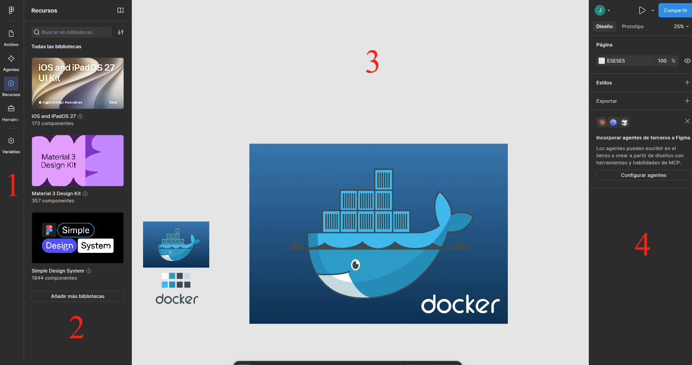

UD1 · Diseño de Interfaces, Comunicación Visual y Figma Base
1. Introducción
Antes de escribir una sola línea de HTML, un desarrollador de interfaces necesita entender cómo se comunica visualmente la información. Esta unidad sienta las bases teóricas (percepción visual, color, tipografía) y la primera herramienta práctica del módulo: Figma.
flowchart LR
A["Investigación y objetivos"] --> B["Principios de comunicación visual"]
B --> C["Teoría del color y tipografía"]
C --> D["Herramienta: Figma"]
D --> E["Wireframe / Mockup"]
E --> F["UD2: Design Systems"]
2. Comunicación visual: fundamentos
2.1 Percepción visual y Leyes de la Gestalt
La Gestalt es una corriente de la psicología (Alemania, principios del s. XX) que estudia cómo el ojo humano agrupa elementos visuales de forma automática, antes incluso de procesar el significado. Son la base de por qué un layout "se lee bien" o "se ve caótico".
| Principio | Descripción | Aplicación en interfaces web |
|---|---|---|
| Proximidad | Elementos cercanos se perciben como un grupo. | Espaciado (gap, margin) entre elementos relacionados vs. no relacionados. |
| Similitud | Elementos con el mismo color, forma o tamaño se agrupan mentalmente. | Botones del mismo tipo comparten estilo; los de distinto tipo se diferencian claramente. |
| Cierre | El cerebro completa formas incompletas. | Iconografía minimalista (p. ej. un logo que sugiere una forma sin dibujarla entera). |
| Continuidad | El ojo sigue líneas y curvas de forma natural. | Alineación de elementos en grid; el usuario "escanea" la página en patrones predecibles. |
| Figura-fondo | Distinguimos un elemento (figura) de su entorno (fondo). | Contraste suficiente entre contenido interactivo y fondo — enlaza con accesibilidad (RA5). |
| Simetría y orden | Preferimos composiciones equilibradas y predecibles. | Grids simétricos, alineación consistente de columnas. |
graph TD
subgraph Proximidad
P1((•)) -.- P2((•))
P3((•)) -.- P4((•))
end
subgraph Similitud
S1[■] ~~~ S2[■]
S3((●)) ~~~ S4((●))
end
2.2 Patrones de lectura (eye-tracking)
Los estudios de seguimiento ocular han identificado dos patrones dominantes de escaneo en pantalla:
- Patrón en F: Típico de páginas con mucho texto (blogs, artículos). El usuario lee la primera línea completa, luego escanea verticalmente el margen izquierdo.
- Patrón en Z: Típico de landing pages con poco contenido. El ojo recorre de arriba-izquierda a arriba-derecha, en diagonal hacia abajo-izquierda, y termina en abajo-derecha (donde suele ir el CTA principal).
flowchart TB
subgraph Z["Patrón en Z"]
direction LR
Z1["1 · Encabezado"] --> Z2["2 · Menú / Login"]
Z2 -.-> Z3["3 · Elemento visual"]
Z3 --> Z4["4 · Botón CTA"]
end
Elección de presentación
Elegir entre disponer la información en columnas, tarjetas, listas o tablas (RA1.c) no es una decisión estética: depende de qué patrón de lectura vas a inducir. Retomaremos esto en UD2 al hablar de layout y design tokens.
2.3 Los cuatro principios C.R.A.P.
Un marco práctico y muy citado en diseño de interfaces (Robin Williams, The Non-Designer's Design Book) resume la comunicación visual en cuatro principios memorizables:
Los elementos distintos deben verse claramente distintos.
- Ejemplo correcto: Un botón primario relleno con color de acento vs. un botón secundario transparente con borde.
- Fallo típico: Un botón secundario casi idéntico al primario.
Elementos visuales que se repiten dan coherencia y cohesión.
- Ejemplo correcto: Mantener el mismo radio de curvatura (
border-radius: 8px) e interlineado en todas las tarjetas de la app. - Fallo típico: Cada página usa un radio de borde distinto en las tarjetas.
Nada debería colocarse de forma arbitraria. Cada elemento debe tener una conexión visual con otro.
- Ejemplo correcto: Alinear los textos a la izquierda siguiendo una línea guía vertical invisible.
- Fallo típico: Textos centrados que rompen la alineación del resto del layout.
Agrupar los elementos relacionados y separar los que no lo estén.
- Ejemplo correcto: Un grupo de campos de formulario separados claramente del siguiente bloque mediante un espacio mayor.
- Fallo típico: Un label de formulario más cerca del campo anterior que del suyo propio.
3. Teoría del color aplicada a pantallas
3.1 Modelos de color en la Web
| Modelo | Muestra | Sintaxis CSS | Uso típico |
|---|---|---|---|
| HEX | ██ | #1E88E5 |
El más usado en diseño; fácil de copiar entre Figma y CSS. |
| RGB / RGBA | ██ | rgb(30 136 229 / 80%) |
Cuando necesitas transparencia explícita mediante canal alfa. |
| HSL / HSLA | ██ | hsl(207 71% 51%) |
El más intuitivo para ajustar un color sin recalcular el valor HEX. |
| OKLCH (moderno) | ██ | oklch(62% 0.19 253) |
Modelo perceptualmente uniforme; ideal para escalas de color coherentes. |
Consejo para HSL
Si tienes un color base en HSL, generar variantes más claras u oscuras es tan simple como modificar únicamente el tercer valor (Luminosidad / Lightness).
3.2 Psicología y convención del color
| Color | Muestra | Asociación habitual | Uso frecuente en UI |
|---|---|---|---|
| Azul / Teal | ██ | Confianza, calma, profesionalidad | Enlaces, banca, SaaS corporativo |
| Verde | ██ | Éxito, confirmación, naturaleza | Estados "completado", fintech, salud |
| Rojo | ██ | Alerta, error, urgencia | Mensajes de error, acciones destructivas |
| Amarillo / Naranja | ██ | Atención, advertencia | Estados de aviso (warning), CTAs promocionales |
| Gris / Negro | ██ | Neutralidad, elegancia | Texto de cuerpo, fondos, interfaces minimalistas |
Accesibilidad cromática (WCAG)
El color nunca debe ser el único portador de significado. Un campo de formulario marcado únicamente en rojo por error, sin un icono o mensaje explicativo adjunto, es invisible para una persona con daltonismo (~8% de los hombres). Esta regla es clave en RA5 (Accesibilidad).
3.3 Contraste y legibilidad
La fórmula de contraste de la W3C (WCAG 2.2) compara la luminancia relativa de dos colores:
donde \(L_1\) es la luminancia relativa del color más claro y \(L_2\) la del más oscuro.
| Nivel WCAG | Ratio mínimo (Texto normal) | Ratio mínimo (Texto grande ≥18pt) |
|---|---|---|
| AA | 4.5:1 | 3:1 |
| AAA | 7:1 | 4.5:1 |
Herramientas de verificación
No hace falta calcular esta fórmula a mano: en Figma utilizaremos plugins automáticos como Stark o Contrast para verificar la accesibilidad en tiempo real mientras diseñamos.
4. Tipografía para pantallas
4.1 Clasificación tipográfica
| Familia | Características | Ejemplo | Uso recomendado |
|---|---|---|---|
| Serif | Remates ornamentales en los trazos | Georgia, Merriweather | Textos largos impresos o editoriales; transmite tradición. |
| Sans-serif | Sin remates, trazos limpios y directos | Inter, Roboto, Helvetica | Interfaces Web (UI) — óptima legibilidad en pantallas. |
| Monospace | Ancho de carácter fijo | JetBrains Mono, Fira Code | Bloques de código, datos tabulares y terminales. |
| Display | Decorativa, muy estilizada | Pacifico, Bebas Neue | Titulares de gran tamaño; nunca para párrafos. |
4.2 Legibilidad: reglas prácticas
* Tamaño base recomendado: ≥ 16px (1rem)
* Interlineado ideal: 1.4 a 1.6 × tamaño de la fuente (line-height: 1.5)
* Longitud de línea óptima: 45 a 75 caracteres por línea
* Límite de familias: Máximo 1 o 2 por proyecto
4.3 Origen de las fuentes
flowchart TD
A["Necesito una fuente para mi interfaz"] --> B{"¿Debe cargar garantizado sin red?"}
B -->|Sí| C["Web-safe fonts: Arial, Georgia, Verdana"]
B -->|No| D{"¿Necesito varios pesos/estilos?"}
D -->|Pocos| E["Google Fonts estático: Regular, Bold..."]
D -->|Muchos| F["Variable Fonts: un solo archivo, todos los pesos"]
Optimización con Variable Fonts
Una variable font contiene todos los pesos (100-900) e inclinaciones en un único archivo, interpolables mediante CSS (font-variation-settings). Reduce peticiones HTTP frente a cargar 4-5 archivos estáticos.
4.4 Jerarquía tipográfica (Escala modular 1.25)
| Nivel | Tamaño (rem) | Equivalencia (px) | Uso recomendado |
|---|---|---|---|
| Display | 3.052rem |
~48.8px | Hero / Titular de impacto |
| H1 | 2.441rem |
~39.0px | Título principal de página |
| H2 | 1.953rem |
~31.2px | Secciones principales |
| H3 | 1.563rem |
~25.0px | Subsecciones |
| H4 | 1.25rem |
~20.0px | Tarjetas y bloques menores |
| Body | 1rem |
16.0px | Texto de párrafo base |
| Small | 0.8rem |
~12.8px | Pie de foto, metadatos, badges |
5. Introducción a Figma
5.1 ¿Por qué Figma como herramienta de referencia?
Figma es el estándar de facto en diseño de interfaces colaborativo: funciona directamente en el navegador, permite colaboración en tiempo real y es la base sobre la que construiremos Design Systems y Design Tokens en la UD2. Cumple el criterio RA1.e.
5.2 Instalación, cuenta educativa y cliente local
Figma ofrece acceso gratuito a su plan profesional para estudiantes y docentes.
Obtener Licencia Educativa en Figma
flowchart TD
A["Crear cuenta en Figma.com"] --> B["Solicitar verificación en [figma.com/education](https://figma.com/education)"]
B --> C["Seleccionar rol de estudiante y centro educativo"]
C --> D["Acceso a Figma Professional gratis"]
D --> E{"Elegir entorno de trabajo"}
E -->|Navegador web| F["Usar directamente en Linux / Chrome / Firefox"]
E -->|App de escritorio| G["Instalar ejecutable en Windows / macOS"]
- Sistemas soportados: Linux, macOS, Windows, ChromeOS.
- Ventajas: Sin necesidad de instalación, actualización automática.
- Requisito: Instalar el complemento Figma Font Installer si quieres usar las fuentes tipográficas locales de tu ordenador.
- Sistemas soportados: Windows, macOS.
- Ventajas: Mayor rendimiento con proyectos complejos, uso automático de fuentes locales instaladas, pestañas independientes de trabajo.
5.3 Anatomía del espacio de trabajo
flowchart LR
subgraph Interfaz de Figma
direction TB
T["Barra superior · Toolbar<br/>Herramientas · Modos · Exportar"]
L["Panel izquierdo · Layers/Assets<br/>Páginas, Capas y Componentes"]
C["Lienzo central · Canvas<br/>Área de diseño vectorial"]
R["Panel derecho · Inspect/Design<br/>Propiedades, Auto Layout y Prototipos"]
end
T --- L
T --- C
T --- R

| Zona | Nombre | Función principal |
|---|---|---|
| Barra Superior (Toolbar) | Herramientas vectoriales, creación de Marcos (F), texto (T), comentarios y botón Present/Play. | |
| Panel Izquierdo (Layers/Assets) | Árbol de capas organizadas por páginas, Marcos y biblioteca de componentes reutilizables. | |
| Lienzo Central (Canvas) | Espacio de trabajo vectorial infinito donde se crean las pantallas. | |
| Panel Derecho (Design/Inspect) | Configuración de color, tipografía, Auto Layout, alineaciones y enlaces interactivos de prototipado. |
5.4 Flujo de trabajo práctico en Figma
graph TD
A["1. Crear Frame / Pantalla"] --> B["2. Definir Layout Grid / Retícula"]
B --> C["3. Insertar Formas y Texto"]
C --> D["4. Aplicar Estilos de Color y Tipografía"]
D --> E["5. Agrupar con Auto Layout"]
E --> F["6. Crear Componentes Reutilizables"]
Paralelismo Figma ↔ CSS Flexbox
El sistema Auto Layout de Figma (Shift + A) equivale directamente al comportamiento de CSS Flexbox:
.card-container {
display: flex;
flex-direction: column;
padding: 24px;
gap: 16px;
}
5.5 Colaboración y revisiones
sequenceDiagram
participant D as Diseñador/a
participant F as Archivo Figma
participant R as Revisor/a (Profesor/a)
D->>F: Crea Frame y aplica estilos de diseño
D->>F: Comparte enlace (permiso: Can Comment)
R->>F: Añade comentarios sobre la interfaz
F-->>D: Notificación de comentario
D->>F: Resuelve observaciones e itera
D->>R: Presenta entrega final
6. Alternativas de presentación de la información
No toda la información se presenta igual. Antes de maquetar, hay que elegir el formato adecuado:
| Formato | Cuándo usarlo | Ejemplo práctico |
|---|---|---|
| Lista | Secuencia de ítems sin jerarquía compleja | Menús de navegación, pasos de un proceso |
| Tabla | Datos estructurados comparables en filas y columnas | Tabla de precios, comparativa de planes |
| Tarjetas (Cards) | Ítems con múltiples atributos e imagen | Catálogo de productos, entradas de blog |
| Pestañas (Tabs) | Contenido alternativo que comparte el mismo espacio | Ficha de producto (Descripción / Specs) |
| Acordeón | Contenido extenso colapsable | Sección de preguntas frecuentes (FAQ) |
6.1 Niveles de fidelidad en diseño
flowchart LR
A["Wireframe<br/>Baja fidelidad"] --> B["Mockup<br/>Fidelidad media-alta"] --> C["Prototipo<br/>Alta fidelidad + interacción"]
| Nivel | Enfoque principal | Herramientas habituales |
|---|---|---|
| Wireframe | Estructura, distribución y jerarquía (sin color final ni imágenes). | Papel y lápiz, Figma en escala de grises. |
| Mockup | Aspecto visual final (colores definitivos, tipografía real, imágenes). | Figma. |
| Prototipo | Mockup visual + comportamiento interactivo (clics, animaciones, rutas). | Figma (Prototype Mode). |
7. Actividad práctica de la unidad
Práctica UD1: Diseño de una Ficha de Producto
Objetivo: Aplicar los principios de comunicación visual, paleta de colores accesible y jerarquía tipográfica en una pantalla real utilizando Figma.
Pasos a realizar:
- Creación del Canvas: Diseña un Frame de escritorio de
1440 × 1024 pxen Figma. - Layout Grid: Configura una retícula de 12 columnas con margen de
80pxy medianil (gutter) de24px. - Aplicación de C.R.A.P. & Gestalt:
- Muestra al menos 3 principios de la Gestalt en la ficha (ej. Proximidad en precio/botón, Similitud en badges).
- Paleta de Color y Tipografía:
- Define 5 colores (1 primario, 1 secundario, 3 neutros) guardados como Styles.
- Configura una escala tipográfica clara con un mínimo de 4 niveles.
- Verificación de Accesibilidad:
- Comprueba con el plugin Stark que todos los textos cumplen el nivel WCAG AA (ratio ≥ 4.5:1).
- Entrega: Comparte el enlace público de Figma con permisos de lectura/comentario.
8. Resumen y conexión con la siguiente unidad
flowchart LR
UD1["UD1<br/>Comunicación visual<br/>+ Figma base"] --> UD2["UD2<br/>Design Systems<br/>+ Design Tokens"]
UD2 --> UD3["UD3<br/>HTML5 semántico"]
- Los principios de comunicación visual (Gestalt, C.R.A.P.) justifican técnicamente cada decisión de diseño.
- El color y la tipografía requieren cumplir métricas objetivas de accesibilidad (WCAG 2.2).
- Figma proporciona los cimientos (Frames, Auto Layout, Styles) que transformaremos en Design Systems y Design Tokens durante la UD2.
9. Referencias y fuentes
- Williams, R. — The Non-Designer's Design Book (Principios C.R.A.P.).
- W3C — Web Content Accessibility Guidelines (WCAG) 2.2.
- Documentación oficial — Figma Help Center.